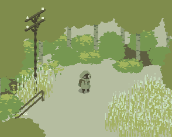
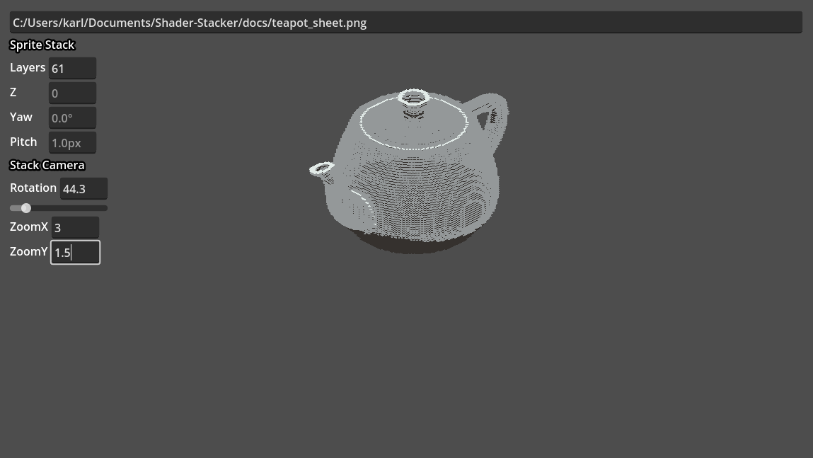

GPU accelerated sprite stacking graphics for the Godot Engine
About

NIUM. Does not use Shader Stacker but features sprite stacking.
Sprite stacking is a 2.5D technique done by drawing cross sections of a 3D object with
slight offset between each layer.
Seen sporatically in many 2D indie games, the main motivation for this project was from
seeing NIUM. A demo game
by OjiroFumoto and
deadlyyucca. The project was ultimately
abandoned.
I started developing this plugin in 2020 as a
north star for learning how to make shaders. Since then, I have been inspired to get back into
game development and will be maintaining the library as I use it myself.
Installing
Shader Stacker is made for Godot 4
Grab a copy of /addons/ShaderStacker from the
official asset library or by
cloning the repo and add it to your project.
Enable the plugin through Project -> Project Settings -> Plugins. You will have
to close an reopen your scenes for the changes to take effect.
Reminder that if sprites look blurry or shaded weirdly, import filter has moved in Godot 4.
To fix it, set
Project -> Project Settings -> General -> Rendering -> Textures -> Canvas Textures -> Default Texture Filter
to Nearest.
Documentation
Preview Tool
Shader Stacker now comes with a tool for live previewing sprite sheets. You can open it by
running PreviewTool/PreviewTool.tscn. It will automatically poll files every
second for changes.

SpriteStack
Property
type
Description
sprite_sheet
Texture2D
Single column sprite sheet
layers
int
Number of rows in the sprite sheet
z
int
Dictates how high or low the sprite stack is relative to the "floor"
yaw
float
Rotates the "up direction"
pitch
float
Amount of space between layers
static_yaw
bool
Do not automatically adjust yaw to be towards the top of the viewport
static_z
bool
Ignore z sorting from any StackCamera nodes in the same viewport